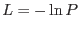
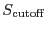

Suppose one has a random variate  with a probability distribution . The nett probability that a given sample of
with a probability distribution . The nett probability that a given sample of  is due to chance is the integral of
is due to chance is the integral of  from
from  to
to  :
:
In the case of a single pixel of a single image, is the Poisson distribution about the expectation value of the counts due to background,
. As described in section 3.2, we say there is a source present in this pixel if  is larger than a cutoff value
. In principle it is possible to invert the relationship between detected counts  and likelihood
and likelihood  , to calculate that value of
, to calculate that value of  which would give
. This value of
which would give
. This value of
 , minus the expectation due to background
, is defined here as the detection sensitivity.
, minus the expectation due to background
, is defined here as the detection sensitivity.
Note that this does not mean that a source with an expectation value of counts
which is greater than
will always be detected. There are always statistical fluctuations to consider. The probability that a source with
will be detected is the integral from  to infinity of the Poisson distribution with expectation value
to infinity of the Poisson distribution with expectation value  equal to
. This is equal to 0.5 in the limit of large
equal to
. This is equal to 0.5 in the limit of large  , but becomes significantly less than 0.5 for about 1. Also, the detection cutoff is naturally not sharp: fainter sources have still some non-zero probability of detection, and sources brighter than cutoff have always some non-zero probability of non-detection.
, but becomes significantly less than 0.5 for about 1. Also, the detection cutoff is naturally not sharp: fainter sources have still some non-zero probability of detection, and sources brighter than cutoff have always some non-zero probability of non-detection.
Where one is performing source detection in parallel on images, there are  inputs to the calculation of nett likelihood at any given pixel. In this circumstance it is no longer possible to invert this calculation to obtain a single detection sensitivity, since there may be more than one combination of counts which yield the same nett
inputs to the calculation of nett likelihood at any given pixel. In this circumstance it is no longer possible to invert this calculation to obtain a single detection sensitivity, since there may be more than one combination of counts which yield the same nett  . Here a definition of sensitivity only makes sense in connection with a fixed source spectrum, as follows. Suppose that at the pixel in question the expected count values
are made up from background
plus source
. (The expectation value of two summed Poisson variates is equal to the sum of the two expectation values.) Suppose also that we know the source spectrum and are thus able to express the source counts as a product between this spectrum and some nett intensity
. Here a definition of sensitivity only makes sense in connection with a fixed source spectrum, as follows. Suppose that at the pixel in question the expected count values
are made up from background
plus source
. (The expectation value of two summed Poisson variates is equal to the sum of the two expectation values.) Suppose also that we know the source spectrum and are thus able to express the source counts as a product between this spectrum and some nett intensity  :
:
Regardless of the precise algorithm employed, likelihood  is some function of the counts , ie
is some function of the counts , ie
The detection sensitivity  can therefore be defined implicitly as follows: